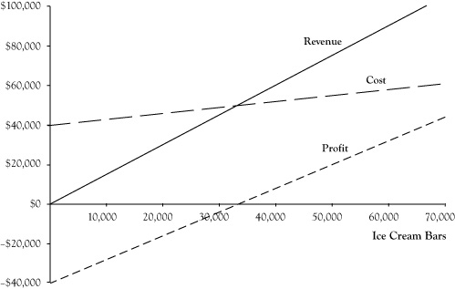
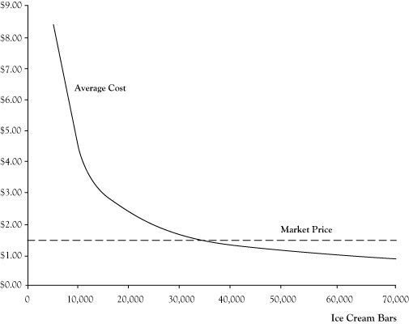

In the preceding projections for the proposed ice cream bar venture, the assumption was that 36,000 ice cream bars would be sold based on the volume in the prior summer. However, the actual volume for a future venture might be higher or lower. And with an economic profit so close to zero, our students should consider the impact of any such differences.
There is a relationship between the volume or quantity created and sold and the resulting impact on revenue, cost, and profit. These relationships are called the revenue function, cost function, and profit function. These relationships can be expressed in terms of tables, graphs, or algebraic equations.
In a case where a business sells one kind of product or service, revenue is the product of the price per unit times the number of units sold. If we assume ice cream bars will be sold for $1.50 apiece, the equation for the revenue functionThe product of the price per unit times the number of units sold; R = P*Q. will be
R = $1.5 Q,where R is the revenue and Q is the number of units sold.
The cost functionThe sum of fixed cost and the product of the variable cost per unit times quantity of units produced, also called total cost; C = F + V*Q. for the ice cream bar venture has two components: the fixed cost component of $40,000 that remains the same regardless of the volume of units and the variable cost component of $0.30 times the number of items. The equation for the cost function is
C = $40,000 + $0.3 Q,where C is the total cost. Note we are measuring economic cost, not accounting cost.
Since profit is the difference between revenue and cost, the profit functionsThe revenue function minus the cost function; in symbols π = R - C = (P*Q) - (F + V*Q). will be
π = R − C = $1.2 Q − $40,000.Here π is used as the symbol for profit. (The letter P is reserved for use later as a symbol for price.)
Table 2.1 "Revenue, Cost, and Profit for Selected Sales Volumes for Ice Cream Bar Venture" provides actual values for revenue, cost, and profit for selected values of the volume quantity Q. Figure 2.1 "Graphs of Revenue, Cost, and Profit Functions for Ice Cream Bar Business at Price of $1.50", provides graphs of the revenue, cost, and profit functions.
The average costThe total cost divided by the quantity produced; AC = C/Q. is another interesting measure to track. This is calculated by dividing the total cost by the quantity. The relationship between average cost and quantity is the average cost function. For the ice cream bar venture, the equation for this function would be
AC = C/Q = ($40,000 + $0.3 Q)/Q = $0.3 + $40,000/Q.Figure 2.2 "Graph of Average Cost Function for Ice Cream Bar Venture" shows a graph of the average cost function. Note that the average cost function starts out very high but drops quickly and levels off.
Table 2.1 Revenue, Cost, and Profit for Selected Sales Volumes for Ice Cream Bar Venture
| Units | Revenue | Cost | Profit |
|---|---|---|---|
| 0 | $0 | $40,000 | –$40,000 |
| 10,000 | $15,000 | $43,000 | –$28,000 |
| 20,000 | $30,000 | $46,000 | –$16,000 |
| 30,000 | $45,000 | $49,000 | –$4,000 |
| 40,000 | $60,000 | $52,000 | $8,000 |
| 50,000 | $75,000 | $55,000 | $20,000 |
| 60,000 | $90,000 | $58,000 | $32,000 |
Figure 2.1 Graphs of Revenue, Cost, and Profit Functions for Ice Cream Bar Business at Price of $1.50
Essentially the average cost function is the variable cost per unit of $0.30 plus a portion of the fixed cost allocated across all units. For low volumes, there are few units to spread the fixed cost, so the average cost is very high. However, as the volume gets large, the fixed cost impact on average cost becomes small and is dominated by the variable cost component.
Figure 2.2 Graph of Average Cost Function for Ice Cream Bar Venture
